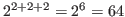

colormap [クラス]
:super object
:slots (cmapid planes pixels LUT-list)
-
- Xwindowのカラーマップおよびアプリケーション指向のカラールックアップテーブル
を定義する。
カラーはRGB値で表現され、その範囲は0〜65535である。
カラーマップのカラーセルは、8ビットの擬似カラーディスプレイの上の
0〜255の範囲の値に設定される。
ここで、８ビットの擬似カラーディスプレイの機能があり、
256色を選択することができると仮定する。
基本的にカラーマップを使用する２つの方法がある。
１つは、システムデフォルトのカラーマップを共有する方法で、
もう１つはプロセスに独自のカラーマップを作成する方法である。
もし、システムのデフォルトカラーマップを使用する場合、
マップのすべてのカラーセルを使いきらないように注意しなければならない。
なぜなら、マップは多くののプロセスから共有されているからである。
もし、独自のカラーマップを使用する場合、
他のプロセスを気にすることなく256色すべてを使用することができる。
しかし、そのマップは明確に独自のwindowに設定しなければならない。
マウスのポインターがwindow内のどこかに動かされたとき、
カラーマップはwindow managerにより活性化される。
システムデフォルトのカラーマップは
eusxが実行される最初にx:colormapのクラスのインスタンスとして、
x:*color-map*に設定されている。
もし、独自のカラーマップを使用するとき、x:colormapのインスタンスを
作る。
これらのインスタンスは、x serverで定義されたcolormapオブジェクトと
一致しており、それぞれのインスタンスのcmapidに示されている。
システムデフォルトのカラーマップを使用するとき、
他のプロセスと共有するカラーを読み込み専用(read-only)に、
Euslispの独自カラーを読み書き可能(read-write)に定義することができる。
"読み込み専用"は、カラーセルに割り当てられる
任意のカラーに定義することができる。
しかし、割り当てた後変更することができない。
もう一方で、"読み書き可能"カラーは定義した後でさえ、変更することができる。
共有カラーは、他のプロセスが変更を予期していないため"読み込み専用"である。
この"読み込み専用"と"読み書き可能"の属性は、それぞれのカラーに付けられる。
（しばしば、カラーセルとして参照される）
colormapオブジェクトは、color IDからRGBの物理的な表現への変換を
定義する。
しかしながら、これらの論理的なcolor IDは、任意に選択することができない。
特に、システムのデフォルトのカラーマップを使用しているとき、使用できない。
color ID（しばしば'pixel'として参照される）は、カラーマップの特別な色
のインデックスである。
Xlibは、割り当ての要求があると、共有カラーのために空いたインデックスの
１つを選択する。
したがって、たくさんのグレー階調のカラーを連続的に割り当てることを
保証することあるいは最初（0番目）のインデックスから始めることはできない。
アプリケーションの観点から、もっと論理的なカラー名が必要とされる。
例えば、グレー階調の数は明るさをインデックスとして参照すべきである。
レイトレーシングプログラムは、
HLSで定義される違った明るさのカラーのグループのために
連続的なインデックスの割り当てを要求する。
この問題に対処するために、Euslispのカラーマップはルックアップテーブル(LUT)
と呼ばれる別の変換テーブルを提供している。
論理的なカラーグループのために、LUTを定義でき、symbol名を付けることができる。
１つ以上のLUTをカラーマップとして定義できる。
LUTは、Xserverが認識できるように、アプリケーションが指定した論理カラーの
インデックスを物理ピクセル値に変換するために整数ベクトルである。
:id [メソッド]
-
- cmapidを返す。
:query pix [メソッド]
-
- 指定されたピクセル数のRGB値を返す。
:alloc pix r g b [メソッド]
-
-
このメソッドは、:store nil r g bと同一である。
新しいカラーセルがこのカラーマップに配置され、指定されたRGB値に割り当てられる。
:store pix r g b [メソッド]
-
- pix番目のカラーセルのRGB値を設定する。
:store pix color-name [メソッド]
-
-
:storeは、カラーマップに色を設定する低レベルメソッドである。
１つの書式として、RGB値を0〜65535で指定する方法である。
他の書式として、"red" や"navy-blue"のようなカラー名で指定する。
もし、color-nameがなければ、NILを返す。
ピクセルはカラーマップのインデックスあるいはNILである。
もし整数なら、カラーセルは読み書き可能でなければならない。
もしNILなら、共有の読み込み専用カラーセルが割り当てられている。
:storeは、カラーマップ内のカラーセルのインデックスを返す。
:store-hls pix hue lightness saturation [メソッド]
-
-
HLS(Hue, Lightness and Saturation)で
指定される色をカラーマップのpix番目に蓄積する。
もし、pixがNILなら、共有の読み込み専用のカラーセルが割り当てられる。
:store-hlsは、カラーセルに割り当てられるインデックスを返す。
:destroy [メソッド]
-
- このcolormapを破壊し、リソースを空にする。
:pixel LUT-name id [メソッド]
-
-
LUTの中からid番目を調べて、ピクセル値を返す。
LUT-nameは、:define-LUTで定義されたルックアップテーブルの名前である。
:allocate-private-colors num [メソッド]
-
-
独自のカラーマップにnum個のカラーセルを割り当てる。
:allocate-colors rgb-list [private] [メソッド]
-
-
rgb-listのそれぞれの要素は、red,green,blueのリストである。
カラーセルは、それぞれのRGB値が割り当てられ、ピクセル値を要素とする
整数ベクトルを返す。
:define-LUT LUT-name rgb-list [private] [メソッド]
-
-
rgb-listに記述されたカラーが割り当てられ、
LUTがLUT-nameのシンボリック名で登録される。
独自のカラーセルを定義するためには、privateをTに設定すること。
:define-gray-scale-LUT LUT-name levels [private] [メソッド]
-
-
線形のグレースケールカラーで表現されるlevels階調の
カラーセルを割り当て、LUTを返す。
例えば、(send x:*color-map* :define-gray-scale-LUT 'gray8 8)
は、システムのデフォルトカラーマップの中に８つのグレーカラーを配置し、
#i(29 30 31 48 49 50 51 0)のような整数ベクトルを返す。
物理ピクセル値は、:pixelメッセージを送ることにより得られる。
例えば、(send x:*color-map* :pixel 'gray8 2)は、31を返す。
:define-rgb-LUT LUT-name red green blue [private] [メソッド]
-
-
RGB表現を縮小したLUTを定義する。
例えば、もし、red=green=blue=2なら、カラーセルには

が割り当てられる。
:define-hls-LUT LUT-name count hue low-brightness
high-brightness saturation [private] [メソッド]
-
-
HLSで使用するcount数のカラーを配置する。
hue (0..360),saturation (0..1),low-brightness
とhigh-brightnessの明るさの差をカラーマップに蓄積される。
LUT-nameで名付けられるLUTも作られる。
-
- HLSモデルを用いてcountの色を配置する。
brightness (0..1)と
saturation (0..1)と,
hue-startとhue-end間の異なったhueを持つ色を
カラーマップに蓄積する。
LUT-nameを名付けられたLUTも生成される。
:LUT-list [メソッド]
-
- このカラーマップに定義されている全てのLUTのリストを返す。
リストのそれぞれのエントリは、LUT名と整数ベクトルの組である。
:LUT-names [メソッド]
-
- このカラーマップの全てのLUTの名前のリストを返す。
:LUT name [メソッド]
-
- nameで指定される整数ベクトル(LUT)を返す。
:size LUT [メソッド]
-
- LUTの長さを返す。
:planes [メソッド]
-
- このカラーマップのプレーンを返す。
:set-window xwin [メソッド]
-
-
このカラーマップをxwinのwindowと関連付ける。
このカラーマップは、xwinにカーソルが入ったとき活性化される。
:free pixel | LUT [メソッド]
-
- pixelの場所にあるカラーセルを開放するか
あるいはLUTのすべてを開放する。
:init [cmapid] [メソッド]
-
-
このカラーマップをcmapidで初期化する。
登録されたLUTはすべて捨てられる。
:create &key (planes 0) (colors 1) (visual *visual*) (contiguous i
l) [メソッド]
-
- 新しいカラーマップを作成する。
XColor [クラス]
:super cstruct
:slots ((pixel :integer)
(red :short)
(green :short)
(blue :short)
(flags :byte)
(pad :byte))
-
- RGBモデルのカラーを定義する。
それぞれのスロットに値を割り当てるには、setfを用いる。
RGB値は、符合拡張され、最大値は
 と表現される。
と表現される。
:red [メソッド]
-
- このXColorの赤色の値を返す。
:blue [メソッド]
-
- このXColorの青色の値を返す。
:green [メソッド]
-
- このXColorの緑色の値を返す。
:color [メソッド]
-
- このXColorのRGB値のリストを返す。
:init pix R G B &optional (f 7) [メソッド]
-
-
XColorを初期化する。
find-visual type depth &optional (screen 0) [関数]
-
-
typeとdepthで指定されるvisual-IDを見つける。
typeは、:StaticGray, :GrayScale,
:StaticColor, :pseudoColor, :TrueColorあるいは:DirectColorのどれかである。
ふつう、depthは1, 8 または 24である。
2016-03-23